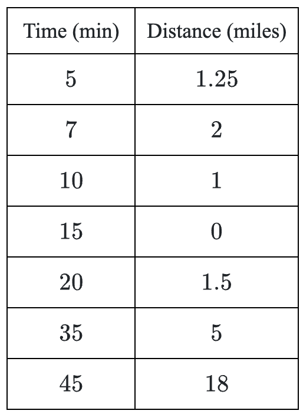

Sketch an ellipse centered at the origin with focal points at \((0,5)\) and \((0,-5)\). Mark a point \(P\) on your ellipse and label it with the coordinates \((x,y)\).
Write an expression for the sum of the distances from point \(P\) to each of the focal points.
If the “string” used to create the ellipse is \(13\) units long, use this distance with your expression from part (a) to create an equation.
See how far you can get rewriting your equation from part (b) in graphing form.
Write the equation of a circle with center \((-2,7)\) that passes through the point \((3,1)\).
Rewrite each of the following series using summation notation.
\(\cos(1.2)+\cos(1.5)+\cos(1.8)+\cdots+\cos(3.6)\)
\(1-3+5-7+9-11+\cdots+201\)
Consider the functions \(f(x)=x^2+2\) and \(g(x)=x\).
Is \(f\) even, odd, or neither? Justify your answer algebraically.
Is \(g\) even, odd, or neither? Justify your answer algebraically.
Approximate the area under \(y=f(x)\) over the interval \(-5\le x\le 5\). Clearly show your method.
Approximate the area under \(y=g(x)\) over the interval \(-5\le x\le 5\). Clearly show your method.
What is the value of \(a\), given \(v=(3,6a)\) and \(w=(-16,2a)\), if \(v\) and \(w\) are perpendicular?
Let \(g(x)=\frac{2x+4}{x+3}\).
Rewrite the equation for \(g(x)\) in the form of \(y=\frac{a}{x-h}+k\) and sketch the graph.
Write at least three limit statements describing the graph of \(y=g(x)\).
Determine all values of \(\theta\), \(0\le \theta < 2\pi\), such that the following equations are true. Use exact values.
\(\csc(\theta)=2\)
\(\sec(\theta)=\sqrt{2}\)
A company has \(200\) cm\(^2\) of material to make an open cylindrical container (has a bottom but no top). How should they design the can so that it can hold as much as possible?
Graph each of the following ellipses.
\(\frac{x^2}{25}+\frac{y^2}{4}=1\)
\(\frac{(x-4)^2}{64}+\frac{(y+4)^2}{81}=1\)
Use function composition to show that \(f\) and \(g\) are inverse functions.
\(f(x)=\frac{x+3}{4}\qquad g(x)=4x-3\)
When Kora graduates, she plans to purchase a hybrid car for \(\$26{,}000\). She does some research and finds that in the first year the value of the car drops \(\$500\) each month. After that, the value drops \(14\%\) per year.
Write a piecewise-defined function to model the value of the car with respect to the number of months since Kora purchased the car.
What will the car be worth \(10\) years after Kora purchases it?
Consider the rational expression below.
\(\left(\frac{1}{y}-\frac{x}{y}\right)\left(\frac{1}{x}+1\right)\)
Set the expression equal to \(10\) and solve for \(y\).
Set the expression equal to \(0\) and solve the equation.
Rewrite the expression as a single fraction in simplified form.
Simplify each of the following expressions.
\(\frac{\left(\sqrt{x^2+y^2}\right)^3}{2\sqrt{x^2+y^2}}\)
\(\frac{2x^5-8x^3}{x+2}\)
Simplify: \(1-\frac{1}{\csc^2(2\theta)}\)
Solve each of the following matrix equations without a calculator.
\(\begin{bmatrix}5 & 10 \\ -6 & 4\end{bmatrix}X+\begin{bmatrix}-1 \\ 2\end{bmatrix}=\begin{bmatrix}-6 \\ 4\end{bmatrix}\)
\(\begin{bmatrix}8 & -1 \\ 4 & -7\end{bmatrix}Y=\begin{bmatrix}8 & -54 \\ 4 & -14\end{bmatrix}\)
A car’s distance from home is given in the following table. Assume the car started from home.
Calculate the average velocity in miles per hour for each interval.
What does a positive velocity indicate? A negative velocity?
What was the average velocity for the entire \(45\) minutes?
Sketch a graph of the car’s distance from home as a function of time.
